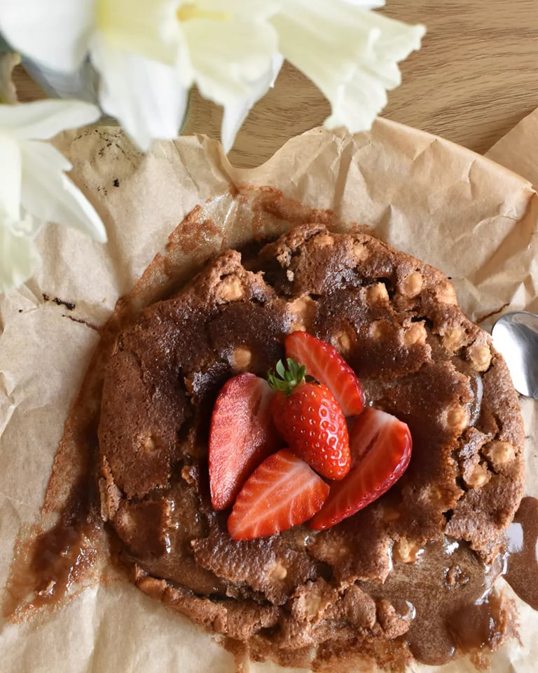

Kaddlaka

Description
Ingredients
- 70g butter
- 100g chocolate
- 20g hazelnuts
- 2 eggs
- 70g white sugar
- 70g brown sugar
- 2 spoons of flour
Steps
- Melt butter and chocolate at low temperature.
- Mix eggs and sugar in a bowl, and add melted butter and chocolate. Add hezelnuts to the mixture.
- Combine everything and add flour.
- Put baking paper in an 18cm mold and pour the mixture.
- Bake at 180 degrees celsius for about 20 min.
- Decorate with strawbeeries as desired.
- Have a good time eating!